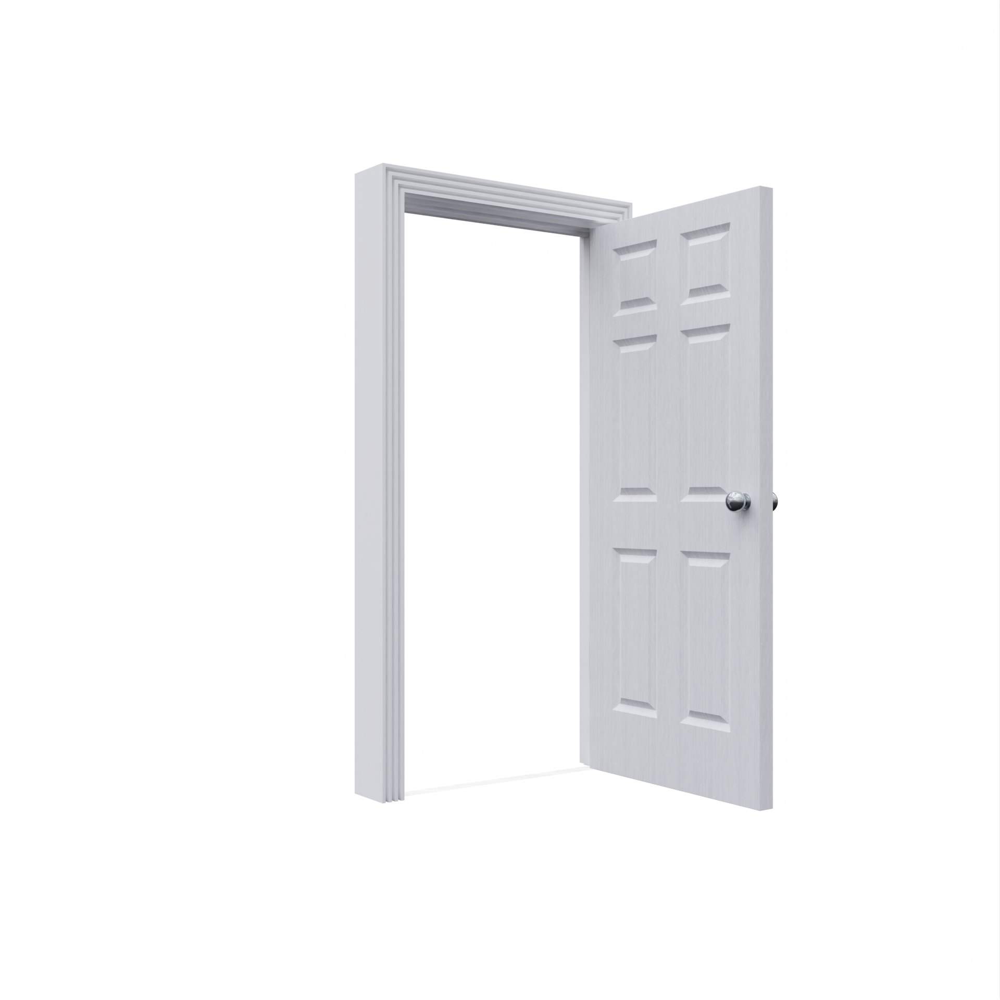

welcome!
you're just in time...
2P5Z9TWqFu0a36T4GC9FfV3GkAABuw3PX23UcwqHgRxNxGHAWPazYPWtEx3pcEMS0beC2XqNiHGEpgJaTW6Z7HEXJQWu6zN0Jkytv74uJ4SaiCVGJr9qJqWQF69L0392ZdFiJhnVNvzaPrjxdkjQADe65d15vDwUPBKr88DRZp16xcScBi3cJ24XFbrMhLJ42HHwJhyuzNN5fdD6q2qivbg6kFXS3Bh6ngZWxzaB541eG4retw8FqRaqwN5VubTa56CqA6eH6wHifZpGDpk3R3z0tKZUBUR5Jfea8bT9v0HtMRZdEp3mAnerHJ2W1QaReGZqaFzvYSU1GUEkACgfU1QQHkWhUVNgSyfqKGdgdyky63jBMkcwybTAm4XtcD6DQM0QePTDYbYmuetVAghwXdppvqfMAWc2JfGJCwrr8RmTeQNPPj70xpn3vTMZgK8uKuc46Hg3rBFNcfgPckw8EuKQmvjaGpVRmFatd9m6VgpFj91e0HFJCKKTw04QYGmn0r8DBBfpfhrqvXentjgJEqXpwPP6wwmBAHhQLKi0GQ8gmCJNwHYdDwRBHJe8tRfFD9PtGL2eK2kEiqWD8bCa64Rr5kfhjqCyhfE5zTrNh5LHQjqa6DVN2z8z3nSijYqnJVKfuZfh7j0hQmD4TiRhXqbjFPABUwd9eyjR4jDrMV4Vc5uQ5hxwZ9MHYbhGGb7cjmTZbgVXmLWCS1LqWyJ1V7GndycqCSHwrK5y0HWiLW64S36cZSgpEWHNjEMm8H2KUfR0VQCzT6NdXdng9Dy64EFVaHdA2Yu4jtPd2vX5fFp4vM8kHSfkmprX4jS36Exn6tUBQCNGddyGbMjg12zx6W9nY8C71vVbzFnMMzqQtmxJccm2t1upjiyRnJ6ynJppD4gy7PZwLDqHMYV6F5Lu9rbXbvhzMZECF1NjafR7HpHaRJKmF2HgEz81peaPTKttVk5m019TP3b59nndNnW35deNpiMcxBuKTagpS9t9rHiJSTEVVNgJxtP8JTrdBtMCFWhGyfdy3Qw0wi2RUPGkLtuvA7N5Urq1uK1MmKpD2gkVZLiGYS0J6KrSkWzRtuCH3pdW6i9empmm8dSV1Xi7VA1WjBiagRtYYbT2q3e99aAu07j9paJ03HA1B2jy5fcri1FJa1prE5RrDScwxdXnBYyVkDZzB4i6qnjWzh0Jia3JKjBfqHiB0UzpD59SSHkrRtMen1Xvhc2G6U2x1CtfggUrzx2cibVG5TYUxh6eGgrxLVeQVQd9xPgaLVCCJ4Xu6DrQvJzZ1Fn99BMPJe1NRE4H3DrwbbHWKPLjMhMCGyXnQgz9m4PwXkXUtmJi2DvPn9eT6GjxTZt9XzL8YgJHx5g5dyfSH5g8mZkP8jrnT1d8VSrRx1UVmBdN32qXx3YewMVQJzG7vX1nJ437eL76MUWr4dx0ZZS8T8NzuJ4p0ncHXxa8AGpe8c3ZK6ThRXhZ6UQfY1UALJ6CqbYFCiNww1D2zE4S